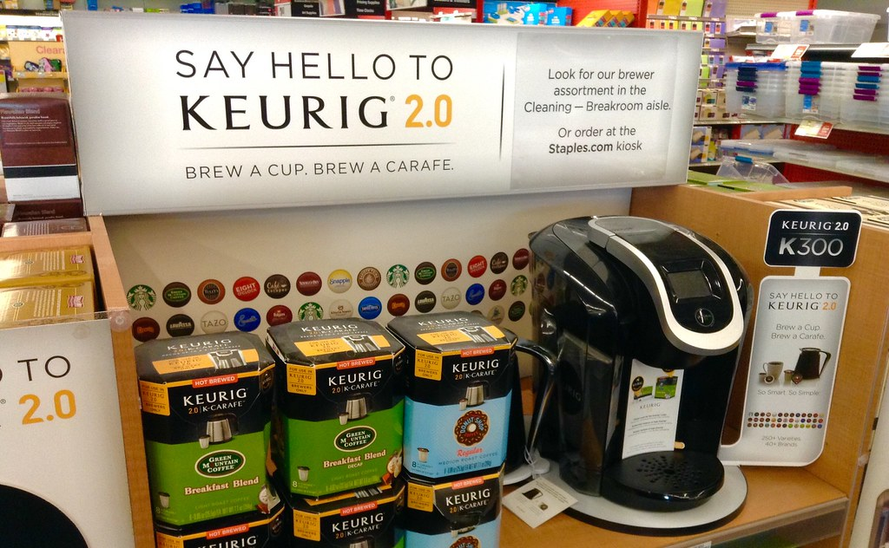

Keurig Dr Pepper sales rose 71% to $7.3 billion in the third quarter as JDE Peet's joined

Keurig Dr Pepper's net sales rose 70.6% to $7.3 billion in the third quarter of 2026, the first full quarter to include JDE Peet's, which it bought on April 1. Operating margin fell to 18.2%, but net income attributable to KDP rose 33.2% to $882 million, helped by a gain on the sale of its Chobani stake. Free cash flow was $884 million.
JDE Peet's roughly doubled the coffee side of the business
Net sales were $7.3 billion, against $4.3 billion a year earlier, an increase of 70.6%. The company's earnings release says JDE Peet's net sales for the quarter were $2.6 billion. Because the deal closed on April 1, that amount was new to the company in the quarter. Excluding it, the company said legacy KDP net sales increased 8.6%.
In its 10-Q the company reports its U.S. Refreshment Beverages segment, its largest legacy segment, grew sales: it says net sales increased 10.9% to $3,033 million.
Margins narrowed as sales mix changed
Gross profit rose to $3.5 billion, but gross margin fell to 48.0% from 54.3% a year earlier. Operating income rose 34.0% to $1.3 billion, which is 18.2% of sales, against 23.1% in the third quarter of 2025. Operating income grew more slowly than sales. The company's release says operating income included a $99 million benefit from tariff refunds in the quarter.
A gain on the Chobani stake lifted net income
Net income attributable to KDP rose 33.2% to $882 million and diluted earnings per share rose 20.4% to $0.59. Income before tax rose 42.3% to $1.2 billion. The 10-Q shows a gain on the sale of its equity method investment in Chobani, which the company said it completed in September 2026. Interest expense rose 152.1% to $474 million from $188 million a year earlier. The company said this reflected increased debt, including debt acquired with JDE Peet's. The effective tax rate was 21.5%.
Free cash flow rose, and debt nearly doubled
Cash from operations was $1,044 million, up 63.4% from $639 million. Capital spending was $160 million, so free cash flow was $884 million, or 12.0% of sales. In the third quarter of 2025 it was 12.2%.
Total debt was $28.9 billion at September 30, 2026, up from $15.8 billion a year earlier. Cash was $1.3 billion.
Twelve quarters of figures
Net income is the amount attributable to KDP, after non-controlling interests. Net income including those interests was higher. Dividends and buybacks are not shown because the structured data for some quarters is incomplete. Total debt is the balance sheet's long-term debt plus its current debt line.
Sources: Form 10-Q (SEC EDGAR) · Form 10-Q filing index · EDGAR company facts for Keurig Dr Pepper · Keurig Dr Pepper third-quarter 2026 earnings release (Exhibit 99.1). More figures for Keurig Dr Pepper are on its company page.